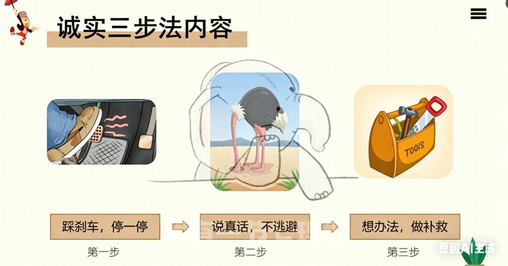
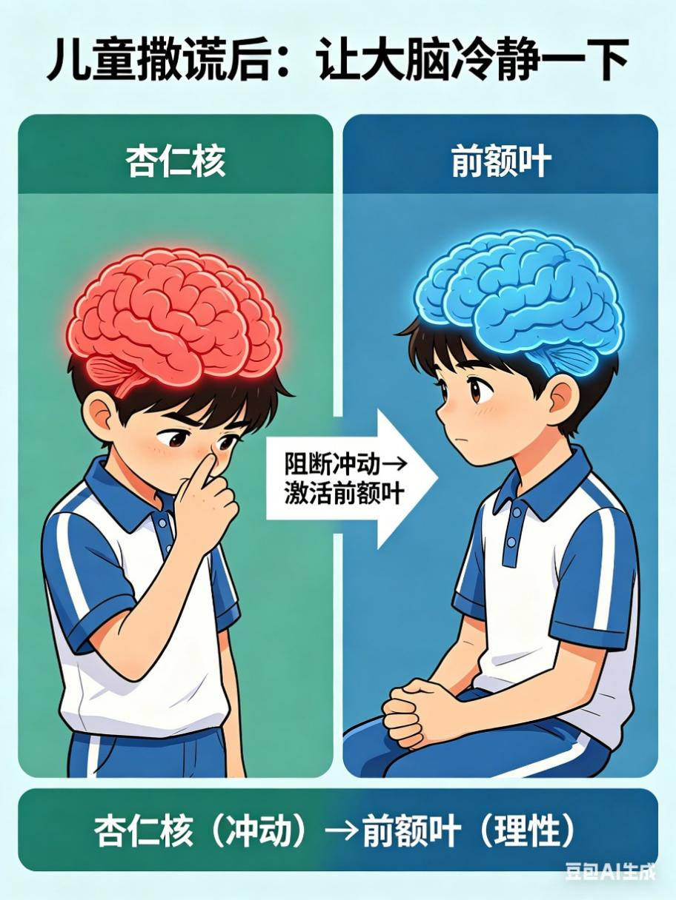
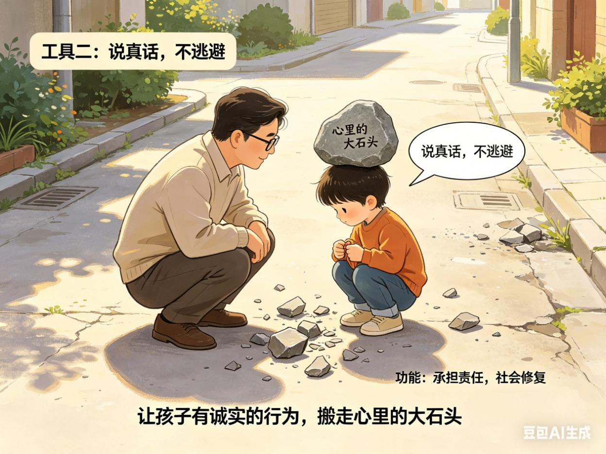
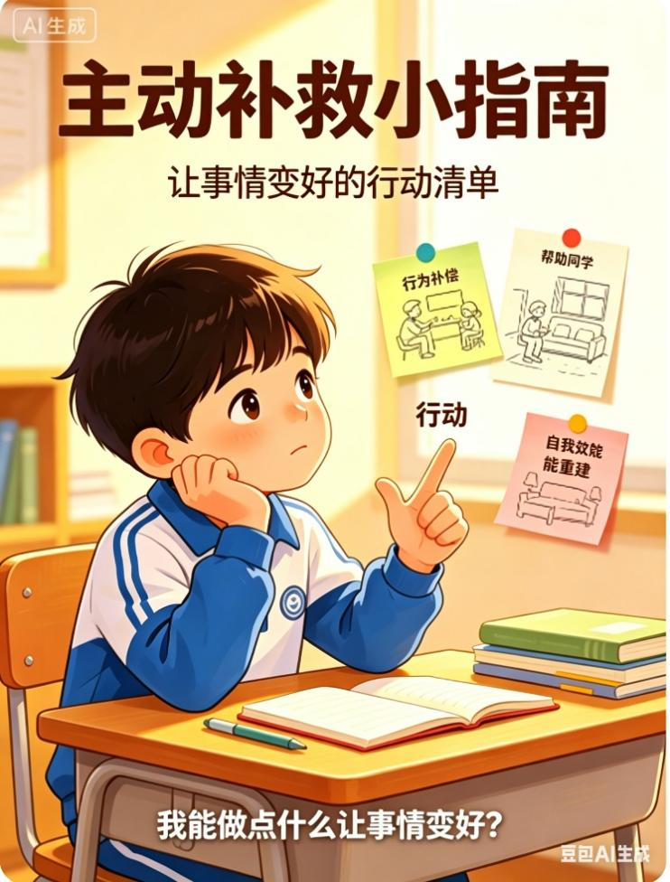
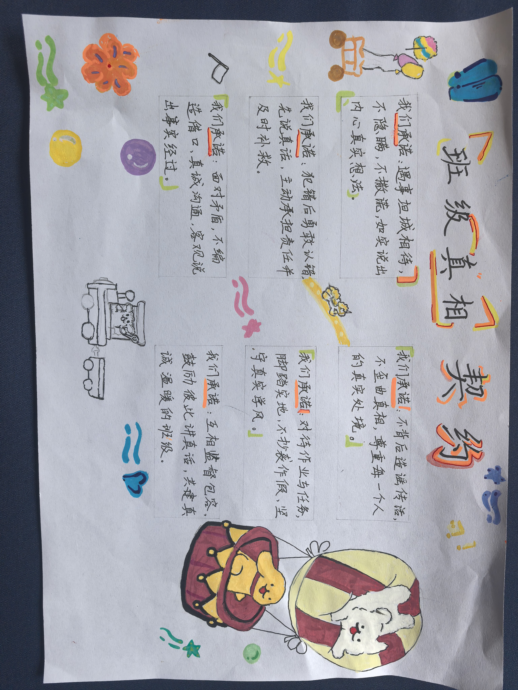

四年级童心书信展 · 知识树思维导图画廊 · “跟谎言说再见”成长研读成果
本项目以经典童话《小木偶奇遇记》为文本依托，针对当前小学阶段学生群体中较为普遍的撒谎行为现象，回应一线教育工作者长期面临的德育困境。项目紧扣书中主角匹诺曹从一个频繁撒谎、历经磨难的小木偶逐步蜕变为勇于担当、真诚做人的真正男孩这一核心叙事主线，深度融合语文、心理健康、道德与法治、英语、艺术等多学科资源，以“谎言背后的心理密码，成长路上的自我塑造”为核心，系统引导学生深入探究撒谎行为的心理本质、深刻反思其行为代价，习得真诚表达与责任担当的核心素养，最终协作设计并创作属于自己的“真诚成长手册”，切实实现从“认识撒谎”到“践行真诚”的深层内化与行为转化。
我们基于发展心理学与行为干预理论，提炼出关键三步策略：第一步，踩刹车，停一停；第二步，说真话，不逃避；第三步，想办法，做补救。

📖 三步真话秘籍：踩刹车 · 说真话 · 做补救
功能：阻断冲动性反应，激活前额叶皮层的理性调控功能。当儿童面临犯错或撒谎的冲动时，帮助其大脑从应激状态回归冷静。
用法：“踩刹车”法：儿童犯错后的第一反应往往是逃避或撒谎，这源于大脑的自动防御机制（杏仁核应激性激活）。“停一停”创造了反应间隙，使前额叶皮层得以有效介入，协助个体从“本能反应”切换到“理性选择”，在此关键环节，教育者可为儿童提供具体可操作的冷静技巧，如腹式深呼吸、脚趾抓地感知、环顾四周数颜色等感官锚定方法。

功能：引导责任承担，促进社会关系修复。引导儿童主动践行诚实行为，卸下内心因隐瞒而积压的沉重负担，真正把“心里的大石头”搬走。
用法：发展心理学研究表明，当儿童主动承认错误后，其内疚感水平会显著下降。需要指出的是，适度的内疚感属于健康的道德情绪指标，它与具有自我贬损性质的羞耻感有着本质区别。当孩子说“爸爸，我犯了一个错误......”则有效降低了儿童开口承认错误的心理门槛，这是一种经典的行为启动策略。教育者应持续向儿童传递并强化“说真话不会让事情更糟”。

功能：实施行为补偿，重建自我效能感。引导儿童从内心萌发主动修复的意愿，积极思考“做点什么让事情变好”。
用法：“我虽然搞砸了，但我能把它修好”，借助具体的补救行为帮助儿童逐步重建自我效能感。与此同时，补救行为能够有效修复因撒谎而受损的人际关系与社会信任，从而降低儿童对被孤立或排斥的深层恐惧。然而，关键在于帮助儿童认识到补救无需追求完美，只需做“哪怕很小的事”，以避免因补救期望过高所导致的心理压力与行为退缩。

✨ 《班级真相契约》节选：“我们承诺：犯错后先说真话，再想办法补救。” ✨
✨ “匹诺曹最后变成了真正的男孩，不是因为他再也不犯错，而是因为他学会了犯错后停、说、补。这就是长大的方式。”
举办“告别谎言·真诚成长”成果展示会，优秀书信、思维导图、成长手册集结成电子画册，颁发“真诚成长勋章”，全体学生宣誓：以匹诺曹为镜，跟谎言说再见。

📜 班级真相契约 —— 我们的真诚承诺 📜